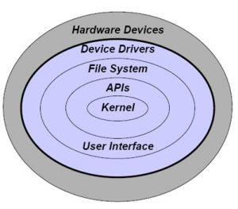

Components of Operating System
links:
main page
Types of operating systems
The evolution of operating systems
Components of Operating System
The five major functions of an operating system
The components of an operating system play a key role to make a variety of computer system parts work together. The operating components are discussed below.

Kernel
Process Execution
Interrupt
Memory Management
Multitasking
Networking
Security
User Interface